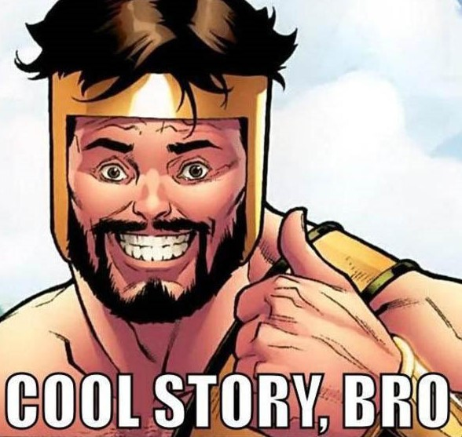

Now this is a story all about how My life got flipped turned upside down And I'd like to take a minute,
just sit right there I'll tell you how I became the prince of a town called Bel-Air In West Philadelphia born
and raised On the playground is where I spent most of my days Chilling out, maxing, relaxing all cool And all
shooting some b-ball outside of the school When a couple of guys who were up to no good Started making trouble
in my neighborhood I got in one little fight and my mom got scared And said "You're moving with your auntie and
uncle in Bel-Air" I begged and pleaded with her day after day But she packed my suitcase and sent me on my way
She gave me a kiss and then she gave me my ticket I put my Walkman on and said "I might as well kick it" First
class, yo, this is bad Drinking orange juice out of a champagne glass Is this what the people of Bel-Air living
like? Hmmm, this might be all right But wait, I hear they're prissy, bourgeois, and all that Is this the type
of place that they should sent this cool cat? I don't think so, I'll see when I get there I hope they're prepared
for the Prince of Bel-Air Well, uh, the plane landed and when I came out There was a dude looked like a cop standing
there with my name out I ain't trying to get arrested yet, I just got here I sprang with the quickness like lightning,
disappeared I whistled for a cab and when it came near The license plate said 'Fresh' and it had dice in the
mirror If anything I could say that this cab was rare But I thought "Nah, forget it, yo holmes, to Bel-Air!"
I pulled up to a house about seven or eight And I yelled to the cabbie "Yo holmes, smell ya later" Looked at
my kingdom, I was finally there To sit on my throne as the Prince of Bel-Air
Goddamit Joe
I had been dating this girl, let's call her "Ann", for several years. We met by working at the same company
(and were still working there in fact) and things were going really well. So well, in fact, that I thought that
it was time to pop the question. Now, I'm going to take a short pause to talk about another man, let's call him
"Joe" (his name is actually Joe. Fuck you Joe). Joe was transferred to our branch probably about six months before
I decided to propose. He was one of those guys who was being groomed for upper management, and he was transferred
to our branch (I'm assuming) because my manager was getting pretty up there in years and Joe was a prime candidate
to take his place. Fun fact about Joe: His left eye was all foggy and glazed-over looking. It looked like it
had a white film over it, but apparently he could see fine out of it. Another fun fact: Joe was a total dickbag.
He was one of those guys that sucked up to people he wanted to impress and was a complete asshole to everyone
else. Back to the big rejection. I had done all of the things a guy is supposed to do. I asked her dad for permission,
I found an awesome ring, I took her to a nice restaurant. Ann looked crazy nervous the whole dinner, but I assumed
she knew that it was coming and it was all anticipation. Like I said, things were going really well. After the
main course and before dessert, I got down on one knee and proposed. She said no. Apparently, she had been secretly
dating Joe for several months and was planning on breaking up with me, which she proceeded to do. In front of
the whole restaurant. And then she left. The waiter gave me a free dessert. It was still pretty brutal. Not long
after, Joe actually got his promotion elsewhere and transferred, and Ann followed him. So now I am still not
married.
TL;DR: If it hadn't been for Cotton-Eye Joe, I'd been married long time ago. Where did you come from? Where
did you go? Where did you come from, Cotton-Eye Joe?

Why the robots.txt?
The robots.txt is to allow or deny the internet robots access to your parts of your page. When a robot makes an attempt to access your page, they first access the
robots.txt file, to see where and what they are allowed to access. This is facto the standard today. I have set my robots.txt do deny all robots access to the pages.
This is not recommended for ensuring your information as malware and different software can ignore the robots.txt and therefore is not secure. The robots.txt is also
a public file, which means that everyone can see what you do not want the robots to see.
Why the humans.txt?
The humans.txt is just a text file where the creator/creators usually leaves their contact information and also give credit to people who helped make the site or
supported in any way. This is not a standard, but it is considered nice and good practice.
What is Open Graph?
Open graph basicly makes a small preview object when you share a link on supported sites, such as social media pages like Instagram or Facebook.
it creates a small object and often there is a preview picture and title etc. The only thing you need to do as a developer is to add additional meta tags in the header,
and all the sites supporting the Open graph and RDF objects automatically create the RDF object when posting a link (for example in chat windows in facebook).
The 4 vital settings you need to set is the URL, an image, what type of page it is and the title of the page. The protocol will then create the RDF object with those
parameters and shown. There are multiple additional options you can add and I have chosen to add a short description to the RDF object.
Why do we separate HTML and CSS?
We separate the HTML and CSS, kind of like the model/view/controlller separation in object oriented programming. HTML is kind of like the model, where are the structure
and content is held, and CSS is the view in this comparison as it controls the text font, the background images and all the visual stuff. We use CSS to get a uniform look
as all the view settings can be set in one file and used in many. Instead of doing a lot of copypasting of code and visual settings, we can keep them separated and simply
reference the stylesheet used on this page. We save a lot of space and the code is much more readable. This also saves a lot of calls when we access a website with multiple
tabs.
The main reasons for separating the css and the html is:
Single point of change. We do not have to change every html page after we make a change since a change in the stylesheet affects all the pages using that sheet
Caching the css improves the performance as the items does not need to be loaded mutiple times
Model/View/Controller separation principle is easier to maintain.
It's easy to re-skin the whole webpage by just changing the CSS